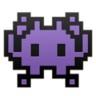

I'm Ahyoung
Developer

Developer
개발자 박아영입니다. 독학으로 시작하게 된 프로그래밍이 재미있어 전문교육기관에서 집중적으로 배운 후 개발자가 되었습니다. 앞으로도 이 열정을 유지하여 오늘보다 더 나은 개발자로 발전하고싶습니다.제 이력서 사이트에 방문해주셔서 감사합니다!
저는 디자이너경력이 있고 어린시절 html수업을 들은 세대여서 프론트엔드에 해당하는 부분을 영감이 떠오르면 그 바탕으로 청사진을 계획하여 감각있는 결과물을 만들어 냅니다. 프로그래밍 언어를 배우면서 디자인에서 그치지 않고 코드를 작성하여 구동이 되는 웹사이트를 만들어보니 스도쿠를 풀어낸 것 같은 성취감을 느꼈습니다. 앞으로도 이 적절한 조화를 더 대단하고 간결하게 구현하는 개발자로 발전하고싶습니다.
| 2020.10 - 2021.04 |
코틀린 안드로이드 & 자바 응용 SW 개발자
기관: (재)부산인재개발원 부산 IT 교육센터 |
| 2020.03 - 2020.10 |
Utbildning i svenska(스웨덴어)
기관: Järfälla Lärcentrum(스웨덴 스톡홀름) |
| 2012.08 - 2016.05 |
의상 및 섬유공학과
State University of New York college at Buffalo |
| 2015.08 - 2016.05 |
신발 및 액세서리학과
Fashion Institute of Technology |
| 2021 |
[아주대학교병원]
소프트웨어 개발자 아주대학교병원의 정보관리팀인 (주)대아정보시스템에서 근무하는 동안 C#언어를 .Net framework를 사용하여 병원에 필요한 소프트웨어개발을 하였습니다. 그 중 인상깊었던 프로젝트는 혈액투석환자 관리 프로그램이였습니다. 이유는 제가 처음부터 Infragistics로 뼈대를 만들어가며 만들지 않았던 관리프로그램이라 나 자신이 예전의 직원이 되어 분석부터 새로하여 잠자고 있던 소프트웨어를 실제로 사용을 하기위해 추가적으로 필요한 기능을 추가 및 업데이트하고 확인하는 과정에서 기존 직원이 만들어낸 에러 하나 하나를 찾아가며 그 과정에서 오류하나를 해결하면 프로그램에서 엑셀파일을 만들어낼때 동기화가 제대로 되지않는 문제, 엉뚱한 데이터를 심어주고 있는 문제, 데이터 초기화가 되지않는 문제 등등 문제점들이 점점 발견되어 몇 주간 개발에 힘썼던 프로젝트이기 때문입니다. 근무기간동안 소프트웨어적 개발도 중요하지만 방대한 빅데이터를 다루는 것 또한 중요하다는 사수님 덕분에 PL/SQL을 집중적으로 활용하여 Procedure 및 Function기능을 다양하게 사용하였습니다. 이 기회로 RDBMS의 무궁무진한 기능에 관심을 가지고 제 자신이 봐도 놀라울 정도로 더 많이 발전한 계기가 되었습니다. 기존 업무 외에도 디자인적 감각과 웹페이지 개발 재능을 인정받아 기존 직원들이 생소해하는 Bootstrap기술을 활용하여 새 기술이 적용된 반응형 회사 홈페이지 기획도 맡았습니다. 눈여겨 볼 점은 제가 평소 프로그래밍을 할 때 Java언어로 웹을 관리하는 JSP를 사용하다가 이 회사에서 사용하는 C#언어로 관리하는 ASP를 사용하여 웹페이지를 기획했다는 점입니다. 이처럼 어떤 언어가 주어지든 괴물같은 적응력을 가진 것이 제 장점입니다. |
| 2017 - 2019 |
직업진로강사
창원, 김해, 마산 지역의 중, 고등학교와 진로행사장을 돌아다니며 의상디자이너를 꿈꾸는 꿈나무들에게 제가 디자이너가 되기위해 준비했었던 점을 알려주고 의상을 디자인하고 패션쇼까지의 과정을 설명하였습니다. |
| 2016 - 2017 |
[BCNY International]
신입 디자이너 PLM, 제품개발, CAD, Adobe Illustrator, Photoshop, Bridge, 엑셀 맡은 브랜드: Michael Kors, Tommy Hilfiger, Tretorn, Kenneth Cole, Stuart Weitzman |
| 2016 & 2017 |
[Fashion Footwear Association of New York]
비쥬얼 프레젠테이션 |
| 2016 |
[Global brand group]
뉴욕의 엠파이어스테이트 빌딩에 위치한 Anne Klein본사에서 브랜드를 위한 팀 프로젝트를 맡았습니다. |
| 2015 |
[You and Who Company]
제품개발 인턴쉽 |
© 2022 Ahyoung Park.